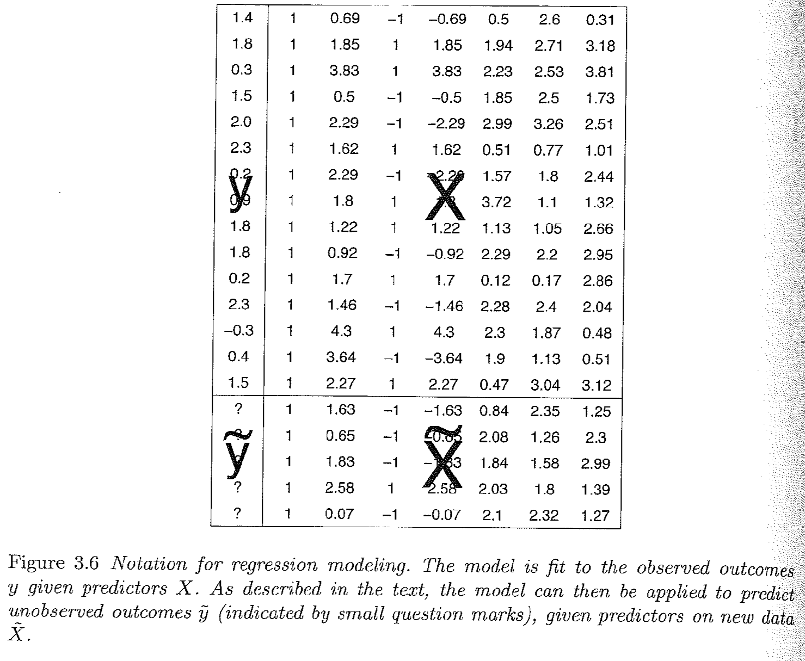

4.2 Diving Deeper into OLS Matrix Representation
In this section, we will review the matrix representation of the OLS regression in more detail and discuss how to derive the estimators for the regression coefficients.2
OLS in Matrix Form: Let \(X\) be an \(n \times k\) matrix where we have observations on k independent variables for n observations. Since our model will usually contain a constant term, one of the columns in the X matrix will contain only ones. This column should be treated exactly the same as any other column in the X matrix.
- Let \(Y\) be an \(n \times 1\) vector of observations on the dependent variable. Note: because \(Y\) is a vector (a matrix with just one column), sometimes it is written in lowercase notation as \(\mathbf y\).
- Let \(\epsilon\) be an \(n \times 1\) vector of disturbances or errors.
- Let \(\beta\) be an \(k \times 1\) vector of unknown population parameters that we want to estimate.
\(\begin{pmatrix} y_1 \\ y_2 \\ y_3 \\ y_4 \\ ... \\ y_n \end{pmatrix}\) = \(\begin{pmatrix} 1 & x_{11} & x_{12} & x_{13} & ... & x_{1k}\\ 1 & x_{21} & x_{22} & x_{23} & ... & x_{2k} \\ 1 & x_{31} & x_{32} & x_{33} & ... & x_{3k}\\ 1 & x_{41} & x_{42} & x_{43} & ... & x_{4k} \\ ... & ... & ... & ... & ... & ... \\ 1 & x_{n1} & x_{n2} & x_{n3} & ... & x_{nk}\end{pmatrix}\) X \(\begin{pmatrix} \alpha \\ \beta_1 \\ \beta_2 \\ \beta_3 \\ ... \\ \beta_k \end{pmatrix}\) + \(\begin{pmatrix} \epsilon_1 \\ \epsilon_2 \\ \epsilon_3 \\ \epsilon_4 \\ ... \\ \epsilon_n \end{pmatrix}\)
Our estimates are then \(\mathbf{ \hat y} = X\hat \beta\). What are the dimensions of this quantity?
Gelman and Hill Section 3.4, pg. 38 provides a nice visual of how this representation maps onto what a typical dataset may look like, where we will try to estimate a set of coefficients that map the relationship between the columns of \(X\) and \(\mathbf y\):
\
This is a good place to review Gelman and Hill 3.4 on different notations for representing the regression model.
4.2.1 Estimating the Coefficients
Models generally start with some goal. In OLS, our goal is to minimize the sum of squared “residuals.” Here is a video I created to explain why we can represent this as \(\mathbf{e'}\mathbf{e}\).
Note: at the end of the video it should read \(X\hat\beta\), not \(\hat X \beta\)What is a residual? It’s the difference between y and our estimate of y: \(y - \hat y\). It represents the error in our prediction– how far off our estimate is of the outcome.
We can write this in matrix notation in the following way where \(\mathbf e\) is an \(n \times 1\) vector of residuals– a residual for each observation in the data:
\[\begin{align*} \mathbf{e'}\mathbf{e} &= (Y' - \hat{\beta}'X')(Y - X\hat{\beta})\\ &=Y'Y - \hat{\beta}'X'Y - Y'X\hat{\beta} + \hat{\beta}'X'X\hat{\beta} \\ &= Y'Y - 2\hat{\beta}'X'Y + \hat{\beta}'X'X\hat{\beta} \end{align*}\]
Recall we want a line that minimizes this quantity. We minimize the sum of squared residuals by taking the derivative with respect to \(\beta\). (We want to identify the coefficients that help us achieve the goal of minimizing the squared error.) Because we are now deriving an estimate, we will use the hat over \(\beta\):
- \(\frac{\delta }{\delta \hat \beta} = -2X'Y + 2X'X\hat{\beta}\)
- So what is our estimate for \(\hat{\beta}\)? We take first order conditions
\[\begin{align*} 0 &=-2X'Y + 2X'X\hat{\beta}\\ \hat{\beta} &= (X'X)^{-1}X'Y \end{align*}\]
You may wonder how we got to these answers. Don’t worry, you will get your chance to solve this! The important thing to note for now, is that we have an analytic solution to our coefficient estimates.